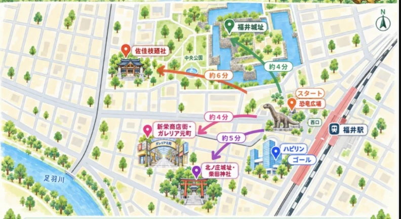

保存できない場合は、写真を長押しして「画像を保存」を選んでください。
北陸新幹線で福井駅に着いたばかりの子恐竜「フクイちゃん」。
駅前のにぎわいに驚いて、お父さん・お母さんとはぐれてしまいました。
撮影したARフォトはここに保存されます。
実写カメラの上に3Dモデルをリアルタイム合成表示しています（three.js使用）。指で画面をドラッグすると、モデルを回転させて色々な角度から見られます。

回答は匿名で、福井駅周辺の回遊促進の取り組みの参考としてのみ使用します。
今回の体験について教えてください（匿名）。
保存できない場合は、写真を長押しして「画像を保存」を選んでください。